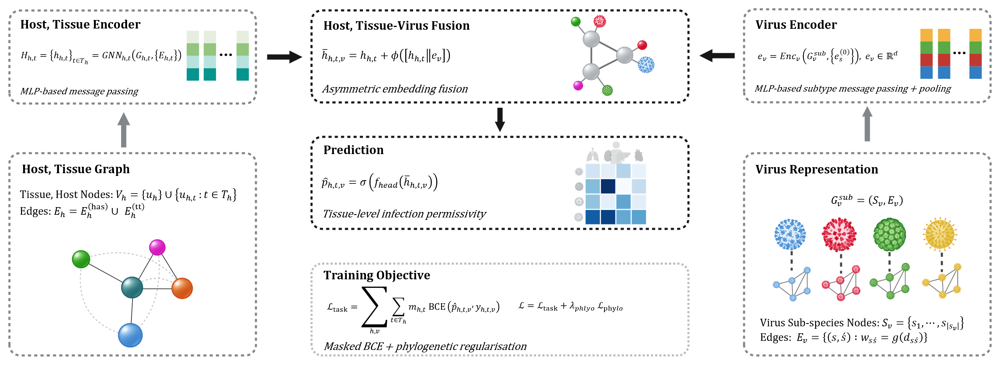
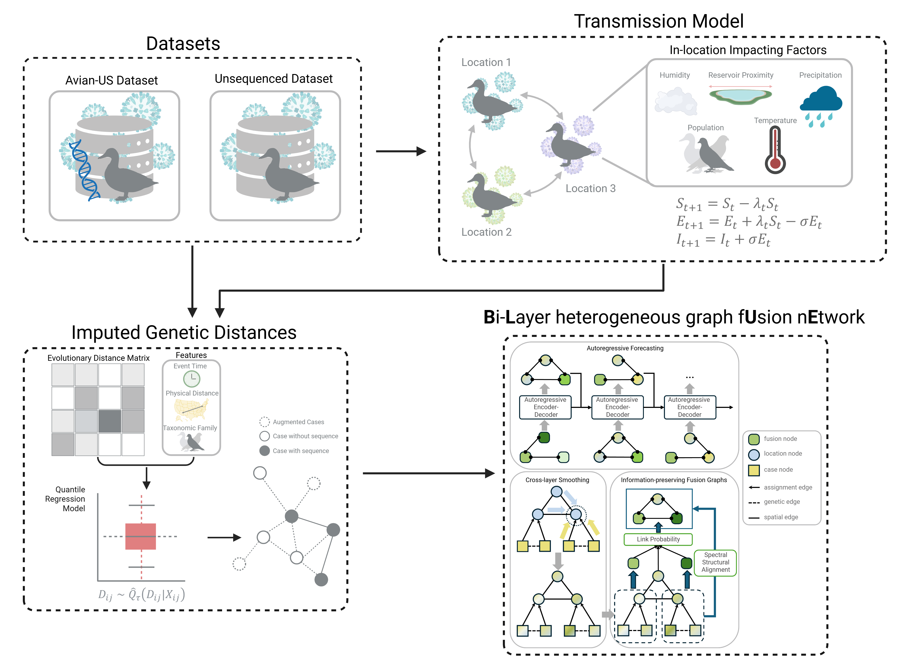

Haley Stone
Postdoctoral Research Assistant, MRC University of Glasgow Centre for Virus Research
Visiting Fellow, School of Computer Science and Engineering, University of New South Wales
Computational biology and infectious disease modelling, with a focus AI-driven prediction models, graph-based inference, and computational approaches to infectious disease prediction. My current research focuses on predicting viral tissue tropism using graph neural networks and developing text-mining pipelines to construct large virus-tissue interaction datasets.
Centre for Virus Research / School of Infection & Immunity
Glasgow, United Kingdom

About
I am a computational biologist working on viral prediction, with a focus on graph-based models for host and tissue tropism.
Currently, I develop graph neural network models to predict viral tissue tropism and build large-scale virus–tissue datasets using text-mining pipelines. Previously, I was a postdoctoral research associate at the School of Computer Science & Engineering, UNSW, where I worked on modelling frameworks for avian influenza in the United States. I now hold a visiting fellow position to continue this work. I completed my PhD at the Kirby Institute (UNSW), developing epidemic models to evaluate COVID-19 vaccination strategies, generating synthetic contact matrices for aged-care facilities using agent-based simulation, and applying phylogenetic methods to investigate clustering in human avian influenza cases.
Selected Publications
-
A Probabilistic Framework for Imputing Genetic Distances in Spatiotemporal Pathogen ModelsACM SIGSPATIAL International Conference on Advances in Geographic Information Systems, 2025Pathogen genome data offers valuable structure for spatial models, but its utility is limited by incomplete sequencing coverage. We propose a probabilistic framework for inferring genetic distances between unsequenced cases and known sequences within defined transmission chains, using time-aware evolutionary distance modeling. The method estimates pairwise divergence from collection dates and observed genetic distances, enabling biologically plausible imputation grounded in observed divergence patterns, without requiring sequence alignment or known transmission chains. Applied to highly pathogenic avian influenza A/H5 cases in wild birds in the United States, this approach supports scalable, uncertainty-aware augmentation of genomic datasets and enhances the integration of evolutionary information into spatiotemporal modeling workflows.
-
Genomic-Informed Heterogeneous Graph Learning for Spatiotemporal Avian Influenza Outbreak ForecastingWeb4Good Workshop, 2026Accurate forecasting of Avian Influenza Virus (AIV) outbreaks within wild bird populations necessitates models that account for complex, multi-scale transmission patterns driven by diverse factors. While conventional spatiotemporal epidemic models are robust for human-centric diseases, they rely on spatial homophily and diffusive transmission between geographic regions. This simplification is incomplete for AIV as it neglects valuable genomic information critical for capturing dynamics like high-frequency reassortment and lineage turnover at the case level (e.g., genetic descent across regions), which are essential for understanding AIV spread. To address these limitations, we systematically formulate the AIV forecasting problem and propose a Bi-Layer genomic-aware heterogeneous graph fusion pipeline. This pipeline integrates genetic, spatial, and ecological data to achieve highly accurate outbreak forecasting. It 1) defines a multi-layered graph structure incorporating information from diverse sources and multiple layers (case and location), 2) applies cross-relation smoothing to smooth information flow across edge types, 3) performs graph fusion that preserves critical structural patterns backed by theoretical spectral guarantees, and 4) forecasts future outbreaks using an autoregressive graph sequence model to capture transmission dynamics. To support research, we release the Avian-US dataset, which provides comprehensive genetic, spatial, and ecological data on US avian influenza outbreaks. BLUE demonstrates superior performance over existing baselines, highlighting the efficacy of integrating multi-layer information for infectious disease forecasting. The code is available at: this https URL.
-
From Ecological Connectivity to Outbreak Risk: A Heterogeneous Graph Network for Epidemiological Reasoning under Sparse Spatiotemporal DataarXiv preprint, 2026Estimating population-level prevalence and transmission dynamics of wildlife pathogens can be challenging, partly because surveillance data is sparse, detection-driven, and unevenly sequenced. Using highly pathogenic avian influenza A/H5 clade 2.3.4.4b as a case study, we develop zooNet, a graph-based epidemiological framework that integrates mechanistic transmission simulation, metadata-driven genetic distance imputation, and spatiotemporal graph learning to reconstruct outbreak dynamics from incomplete observations. Applied to wild bird surveillance data from the United States during 2022, zooNet recovered coherent spatiotemporal structure despite intermittent detections, revealing sustained regional circulation across multiple migratory flyways. The framework consistently identified counties with ongoing transmission weeks to months before confirmed detections, including persistent activity in northeastern regions prior to documented re-emergence. These signals were detectable even in areas with sparse sequencing and irregular reporting. These results show that explicitly representing ecological processes and inferred genomic connectivity within a unified graph structure allows persistence and spatial risk structure to be inferred from detection-driven wildlife surveillance data.
-
Generating a Contact Matrix for Aged Care Settings in Australia: an Agent-Based Model StudyJournal of Artificial Societies and Social Simulation, 2026Understanding infectious disease transmission in institutional settings requires modelling approaches that can represent how contacts arise from structured routines, roles, and spatial constraints. In aged care facilities, interactions are shaped by care delivery processes, staff scheduling, and resident mobility, producing contact patterns that differ fundamentally from those assumed in population-level models. However, standard contact matrices used in epidemiological modelling are typically derived from general population surveys and do not capture these institutional mechanisms. This study develops an agent-based modelling framework to generate high-resolution contact matrices for aged care facilities by simulating task-driven behaviour, staff workflows, and movement through shared spaces. Rather than prescribing contact structure, interactions emerge endogenously from scheduled activities and proximity during task execution. The model is parameterised using collected activity-diary data from aged care workers and is implemented with behavioural logic decoupled from the physical layout, allowing adaptation to alternative facility designs without modifying core mechanisms. Simulation results show pronounced heterogeneity in contact patterns across resident care levels and staff shifts. Low and medium care residents exhibited substantially higher contact frequencies than high care residents, while staff working day and afternoon shifts accounted for the majority of resident–staff interactions. Temporal analyses revealed clustering of contacts around structured daily routines, including meals and communal activities. Integrating a proximity-based airborne transmission component parameterised for SARS-CoV-2 demonstrated that transmission risk was concentrated during high-contact shifts and among more mobile resident groups. Vaccination scenarios reduced predicted transmission substantially, with the greatest reductions observed when both staff and residents were vaccinated. By explicitly linking organisational processes to emergent contact structure, this framework provides a reproducible and transferable approach to contact matrix generation for institutional environments. The model supports more realistic transmission modelling and offers a basis for evaluating targeted infection control strategies in high-risk care settings.
-
DENcode: A Model for Haplotype-Informed Transmission Probability of Dengue VirusbioRxiv preprint, 2026* Co-senior authorship / equal contribution as supervising authorsDengue virus transmission networks are often only partially resolved, due to gaps in sampling, unobserved mosquito-mediated transmission, and using methods (phylogenetics) that describe evolutionary relatedness but not explicit, probabilistic transmission links between individual infections. We developed DENcode, a framework to estimate the relative likelihood of vector-mediated transmission between pairs of dengue cases by combining a temperature- and time-modulated epidemiological kernel, which captures the extrinsic incubation period and human infectiousness, with a phylogenetically informed genetic similarity kernel derived from patristic distances between viral haplotypes or consensus sequences. Validation with a real-life dataset of 90 dengue infections sampled from Colombo, Sri Lanka between 2017 - 2020 and sequenced to resolve within-host haplotypes, DENcode estimates were stable across 100 Monte Carlo iterations, yielding narrow credible intervals (median width <0.001) and consistent top-ranked transmission pairs. Sensitivity analyses using ablation experiments showed that removing either the genetic or epidemiological component substantially altered the distribution of linkage probabilities, indicating that both contribute meaningfully to the inferred transmission structure. Serotype-specific transmission networks constructed from pairwise linkage probabilities from DENcode were analysed using degree- and path-based centrality measures at probability thresholds of 0.1 and 0.5, revealing relative importance of cases to disease transmission within the community. Haplotype-derived networks were more informative than consensus-based networks (x 3.6 and x 1.6 times more edges for DENV2 and 3 respectively). DENcode is a robust framework to explore dengue transmission within a community that provides an output of network of transmission probabilities informed by pathogen genetic similarity and clinical epidemiological parameters.
Projects

Predicting Viral Tropisms in Host Tissues using Graph Neural Networks
A graph neural network framework for modelling virus–tissue interactions and predicting tissue-level tropism from sparse observational data.

ZooNet
A heterogeneous graph framework for forecasting avian influenza outbreaks using ecological connectivity, genomic data, and sparse spatiotemporal surveillance information.